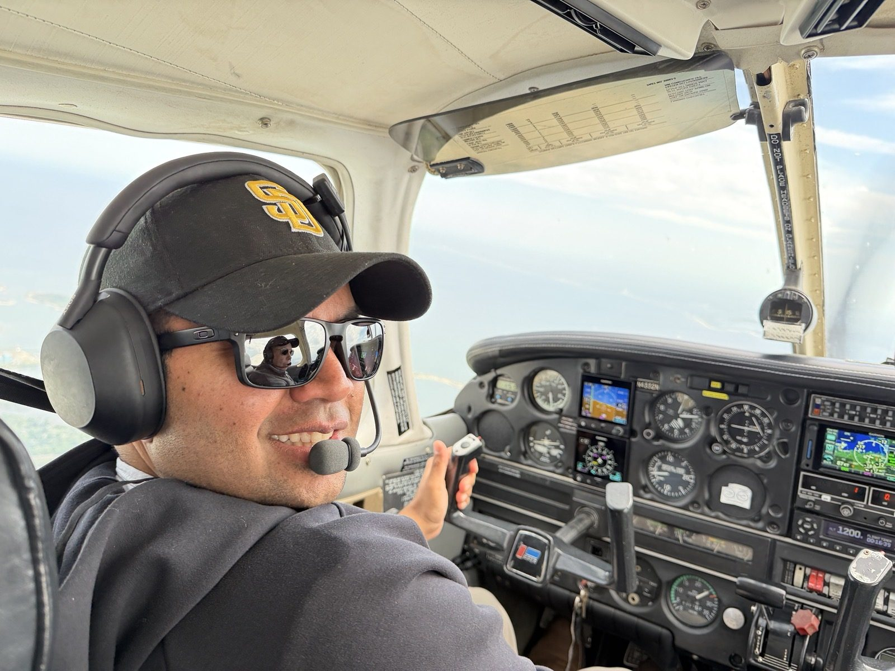

Ameya is flying Bridgeport → JFK → Montauk this afternoon. This page follows the plane, shows the camera pointed at the runway in use, and lists the controllers he is talking to.

Filed IFR. Times are Eastern, from the flight plan; the live status comes from the transponder.
Planes & Friends, live from the field, looking head-on at runway 4 arrivals. A Cherokee is small in a frame built for A380s: look for it low and slow on short final, a minute or two after Tower clears him to land.
If the stream has ended, check the channel for the next one.
LiveATC feeds in the order he is handed off. Each opens LiveATC's player in a new tab; you can keep two or three open at once. Feeds run about 30 seconds behind the map.
Montauk is untowered with no feed and no webcam; the map is the way to follow that leg. All JFK feeds on LiveATC.
| Position | MHz | When |
|---|---|---|
| NY Approach, ROBER | 125.700 | arrival from the northeast |
| NY Approach, CAMRN | 128.125 | arrival from the south (not his today) |
| NY Approach, JFK final vector | 132.400 | turn onto final |
| JFK Tower, 4L/22R and 13R/31L | 123.900 | his expected runway, 4L |
| JFK Tower, 4R/22L and 13L/31R | 119.100 | if he is switched to 4R |
| JFK Ground | 121.900 / 121.650 | taxi |
| JFK Clearance Delivery | 135.050 | before the Montauk leg |
| JFK D-ATIS | 128.725 | weather and runways in use, recorded |
| NY Departure, Liberty North | 118.175 | after takeoff |